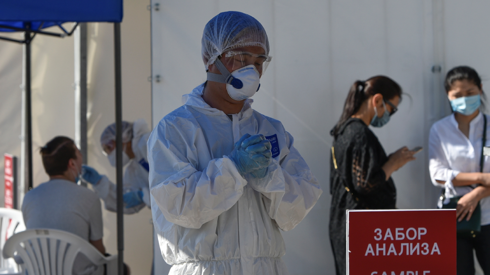
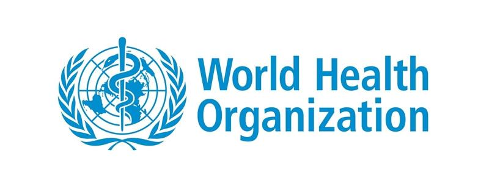

The New York Times
"Primera vacuna China que ya tiene permiso para su uso restringido en militares y pronto será vacuna comercial como bien para la humanidad"
La compañía china CanSino Biologics desarrolló una vacuna basada en un adenovirus llamado Ad5, en asociación con el Instituto de Biología de la Academia de Ciencias Médicas Militares del país .
En mayo, publicarón resultados prometedores de un ensayo de seguridad de Fase I. Los datos no publicados de los ensayos de Fase II demostraron que la vacuna produjo una fuerte respuesta inmune, lo que llevó al ejército chino a aprobarla el 25 de junio durante un año como un "medicamento especialmente necesario".CanSino no dijo si la vacunación sería obligatoria u opcional para los soldados. Mas información
pandemia/22 de julio 2020
EE.UU. reserva 600 millones de dosis de la vacuna contra el coronavirus desarrollada por Pfizer y Biotech.
El Gobierno de EE.UU. pagará a las compañías más de 1.700 millones de euros cuando reciba los primeros 100 millones de dosis, tras recibir la autorización o aprobación de la FDA, según un comunicado. El Gobierno estadounidense también puede adquirir hasta 500 millones de dosis adicionales.
Las acciones de Pfizer y BioNTech han subido tras el anuncio
Tras la noticia, las acciones de Pfizer subieron alrededor de 1% en las operaciones previas a la apertura del mercado en EE.UU. BioNTech subió 4%.
Las naciones de todo el mundo han comenzado a reservar vacunas que aún se están probando como parte de sus esfuerzos para tratar de mitigar el impacto de la pandemia que agitó las economías y mató a más de 600.000 personas desde el comienzo del año. Estados Unidos ya solicitó tomas experimentales, incluida una desarrollada conjuntamente por la Universidad de Oxford y AstraZeneca Plc.
pandemia/22 de julio 2020
La vacuna de Oxford contra el Coronavirus ofrece grandes resultados
El estudio sobre la vacuna de la Universdid de Oxford asegura que produce una fuerte respuesta inmune y es segura en ensayos preliminares
Los resultados del ensayo de fase I/II de la vacuna contra el Covid-19 que está desarrollando la Universidad de Oxford (Reino Unido) indican que no hay preocupaciones de seguridad e induce fuertes respuestas inmunológicas.
En el estudio, publicado en la revista científica ‘The Lancet’, la vacuna provocó una respuesta de las células T en los 14 días siguientes a la vacunación (glóbulos blancos que pueden atacar a las células infectadas con el virus del SARS-CoV-2) , y una respuesta de los anticuerpos en los 28 días siguientes (los anticuerpos son capaces de neutralizar el virus para que no pueda infectar a las células cuando se contraiga inicial.
22/07/2020/Ultima hora:
- OMS
-
Advirtió que la población no comenzará a ser vacunada contra el Covid-19 antes de “la primera parte de 2021″.
“Hay que ser realistas en cuanto a los tiempos", declaró el director de Emergencias Sanitarias de la Organización Mundial de la Salud, Mike Ryan. "Bajo ninguna circunstancia vamos a tomar atajos en lo referido a la seguridad", agrego.
El estado de las investigaciones para encontrar una vacuna contra el Covid-19 y las precauciones que se deben tomar apuntan a que la población no empezará a ser vacunada antes “de la primera parte de 2021”, dijo este miércoles un alto responsable de la Organización Mundial de la Salud (OMS).
“Hay que ser realistas en cuanto a los tiempos. No importa cuanto intentemos acelerar el proceso, tenemos que estar seguros de que una vacuna es segura y efectiva, y esto toma su propio tiempo”, dijo el director de Emergencias Sanitarias de la OMS, Mike Ryan.
“Estamos apurando las cosas todo lo que se puede, pero esto no significa bajo ninguna circunstancia que vamos a tomar atajos en lo referido a la seguridad”, recalcó el médico y alto directivo de la OMS en una sesión informativa dirigida al público en general a través de las redes sociales.
Ryan recordó que ninguna vacuna es 100 % efectiva y mencionó el caso de la que existe contra el sarampión y que es considerada entre las que tienen mayor efectividad, que en este caso llega al 95%. - EEUU
-
Estados Unidos supera los 4 millones de contagios este dia 22 de julio del 2020
Según un recuento inependiente el país tiene ya un total de 4,038,967
Estados Unidos, el país del mundo más afectado por la pandemia de la COVID-19, superó este miércoles los cuatro millones de casos confirmados de coronavirus, en medio de un repunte en varios estados como California, Arizona, Texas y Florida.
Según el recuento independiente de la Universidad Johns Hopkins, EE. UU. ha registrado hasta ahora un total de 4,038,967 contagios y 145,384 fallecidos.
Nueva York es el estado más golpeado por la pandemia con 398 237 casos confirmados y 32,243 fallecidos, una cifra solo por debajo de Brasil, el Reino Unido e Italia. contagiados y 131,594 fallecidos. - Mundo
-
La pandemia de coronavirus supera los 15 millones de casos en todo el mundo
Los contagios diarios rondan los 212,000, de ellos 58,600 se han registrado en Estados Unidos y 44 600 en Brasil. Además, la pandemia ha dejado ya unos 550, 000 fallecidos en todo el mundo.
Más de doce millones de personas se han contagiado del nuevo coronavirus en todo el mundo, según el balance actualizado este miércoles, que da cuenta de 212,000positivos en un solo día y eleva a casi 550,000 la cifra provisional de fallecidos por la pandemia de la COVID-19.
En la CAV, la cifra es de 21,360 contagiados y 1,621 decesos.
La Universidad Johns Hopkins ha informado de que, tras sumar 58,600 nuevos casos en 24 horas, Estados Unidos acumula más de tres millones de contagios , así como unos 132,300 fallecidos.
Brasil, con unos 44,600 positivos en un solo día, se mantiene como el segundo país en número de casos, al tener más de 1,7 millones , entre ellos el del presidente, Jair Bolsonaro. El balance de fallecidos en este caso ronda los 68,000, mientras que el de recuperados supera ya los 1,1 millones.
Casos Confirmados en el mundo de Covid-19
Actualisación: 23/07/2020
Todos los Paises
| Confirmados | Personas recuperadas | Fallecidas |
|---|---|---|
| 15,077,182 | 8,588,757 | 620,257 |
Casos a largo tiempo:
Actualizacion de datos cada 15 dias
Mision a marte
actualidad/20 de julio 2020

Emiratos Árabes Unidos envía con éxito la primera misión de un país árabe a Marte
En las próximas semanas partirán hacía el planeta rojo otros dos históricos proyectos espaciales: el primer viaje de China y la misión más ambiciosa de la NASA
Emirates Mars Mission, la primera misión interplanetaria emprendida por una nación árabe, ha lanzado con éxito la sonda Amal (Hope, Esperanza) hacia Marte esta madrugada. Montada sobre el cohete japonés Mitsubishi Heavy Industries (MHI), el lanzamiento se produjo también desde territorio nipón, en el Centro Espacial de la isla de Tanegashisma, después de dos aplazamientos en la última semana por causas metereológico.
MHI señaló en un comunicado que el lanzamiento fue exitoso. El cohete Mitsubishi MHI-2A, de 53 metros de altura, se alzó hacia un cielo despejado a las 6.58 hora local japonesa y alcanzó la velocidad debajo 30.000 km/h para situar la sonda en la órbita terrestre. Pocos minutos después se desprendieron dos propulsores adicionales. El cohete siguió la trayectoria que estaba planeada y a los 56 minutos del despegue, mientras volaba sobre el Océano Atlántico al este de Brasil, se confirmó la separación de la nave que lleva la sonda hacia Marte.
The Economist
Revista/portada Julio 2020

Esta famosa revista que da mucho de que hablar todos los años por sus fuentes de financiamiento, incorporan mensajes ocultos de una agenda de las 13 familias de poder en el mundo, que ellos muy bien sostienen.
presentamos la portada correspondiente a este mes de Julio 2020 titulada "The world if" portada que tiene una variación diferente a las demás, en la cual se muestra determinados patrones o diferencias para imaginar un mundo con respecto a los elementos que se muestran en su contenido, dando pistas para analizar lo que podría estar ocurriendo o esta por suceder.
-
ELEMENTOS DEL CONTENIDO:
- Plantas nucleares
- energía renovable
- extinción de especies
- Cequias
- Colores rojo y negro( ref: China)
- Aviones y humo (contaminantes y esparcidores)
Que pasaría si los republicanos giraran en torno al clima o si las aplicaciones de rastreos de carbono se convirtieran en un sistema de vigilancia gigante, lea nuestros escenarios imaginarios para un mundo sin calentamiento en la edición: Consultar
Neuralink
Elon Musk ha comunicado que este 28 de agosto habrá noticias sobre Neuralink.
¿Que es Neuralink? Un proyecto que busca conectar nuestros cerebros a una computadora.
Se viene algo muy importante que podría revolucionar por completo el mundo que conocemos.
Mas informacion
Bill Gates
La conclución "sombría" de Bill Gates sobre el Coronavirus.
El fundador de Microsoft:
Bill Gates, dijo este jueves que el panorama actual del Covid-19, tanto a nivel mundial como en Estados Unidos, es " más sombrío" de lo que hubiera esperado.
Atribuyó el aumento en las cifras a la falta de pruebas y rastreo de contactos, así como a la falta de uso de mascarillas.
Union Americana
Estados Unidos/vacuna/ Julio 2020
El gobierno de Donald Trump logró un polémico acuerdo para hacerse con todo el suministro mundial de los próximos tres meses de remdesivir, uno de los medicamentos más prometedores en el tratamiento del covid-19.
El medicamento, producido por la farmacéutica Gilead Sciences, es el primero en ser aprobado por las autoridades en EE.UU. para el tratamiento de la enfermedad.
Según el anuncio del Departamento de Salud y Servicios Humanos, el acuerdo con Gilead garantiza 500.000 tratamientos, equivalente al 100% de la producción de julio, 90% de la producción en agosto y 90% de la producción en septiembre.
- Tratamientos contra el coronavirus: qué progresos se han logrado en la búsqueda de una cura para el covid-19.
- Remdesivir: EE.UU. aprueba el uso de emergencia del antiviral como tratamiento del covid-19.
El acuerdo ha suscitado críticas por el acaparamiento del medicamento por un solo país que, además, cuenta con la mayor capacidad económica del planeta. Y hace pensar qué podría pasar cuando se descubra la vacuna contra la pandemia.
¿Qué es remdesivir?
Remdesivir es un fármaco antiviral que ha sido utilizado contra el ébola. Actúa atacando una enzima que el virus necesita para replicarse dentro de nuestras células.
Su tratamiento ha sido aprobado en pacientes con covid-19 en Estados Unidos y Reino Unido, entre otros países.
Los resultados iniciales de pruebas clínicas indican que puede reducir el período de recuperación de la infección por unos cuatro días, pero todavía no hay evidencia que puede salvar más vidas.
Donal Trump
El presidente de Estados Unidos, Donald Trump, apareció este sábado usando una mascarilla facial por primera vez en público desde que empezó la pandemia del coronavirus.
Trump utilizó una mascarilla de color azul oscuro que en un extremo tenía estampado el sello de color dorado de la Presidencia y que estaba sujeta a sus orejas.
Qué hay detrás del imparable aumento de casos de coronavirus en EE.UU. y por qué preocupa la celebración del 4 de julio.
El mandatario usó el tapabocas durante una visita al Centro Médico Militar Nacional Walter Reed, en las afueras de Washington, donde se reunió con soldados heridos y trabajadores de la salud.
Virus más mortal que el Covid-19
Hace unos días, la Embajada de China afirmó que en Kazajistán se estaba expandiendo un nuevo virus más mortal que el que provoca el Covid-19, pero el país ubicado en Asia central desmintió estos rumores.
La embajada china en Nur-Sultan, capital del país, envió un mensaje el pasado jueves a sus ciudadanos en el que advertía sobre una nueva enfermedad "con índice de mortalidad de lejos superior al COVID-19" y que habría provocado 1.772 muertos en el primer semestre del 2020 y 628 en el mes de junio.
Conoce los sintomas de Covid-19:
Covid-19
- Fiebre.
- Tos seca.
- Falta de aliento.
- Fatiga.

Prevencion:
Usa siempre Tu mascarilla


QUÉDATE EN CASA.SALVA VIDAS.
Ayuda a frenar el coronavirus
- QUÉDATE en casa lo máximo posible.
- MANTÉN el distanciamiento social.
- LÁVATE las manos con frecuencia.
- TOSE cubriéndote con el codo.
- LLAMA si tienes síntomas.